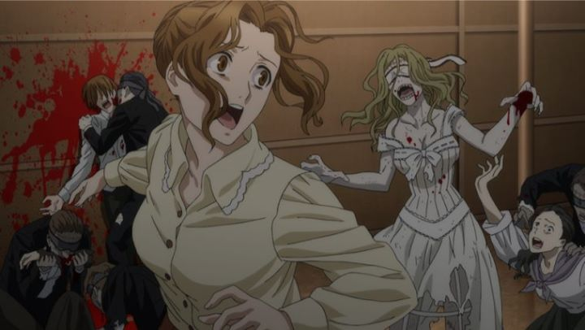

"Black Butler" produced the "Book of..." project between 2014 and 2017, consisting of a third season to the hit anime, a feature-length OVA, and a theatrical feature film, each with new characters that tie the different works together. The film "Book of the Atlantic" is the final piece of that puzzle. As the first proper theatrical film for the anime series, is it worthy to the "Butler" legacy? In short... not really, but it is fun.Those who aren't familar with the franchise will need to know the basics: Ciel Phantomhive is a young earl in Victorian-era England, served by his loyal butler Sebastian. Secretly, Sebastian is a devil whom Ciel made a deal with, in order to (eventually) track down the murderers of him and his parents. The movie opens up with the two boarding a modern luxury cruise boat called the Campania, in order to investigate rumors around the Aurora Society and their scientific experiments to bring the dead back to life. This is a zombie movie: 15 minutes into the film, undead corpses are resurrected and take over the ship. About 30 minutes into the film, the boat crashes into an iceberg and begins to sink. Things escalate quickly here.One will undoubtably notice how similar the plot's setup is to James Cameron's "Titanic" film. I even thought the boat in "Atlantic" WAS the Titanic, but suggesting that thousands of real people died from zombies rather than drowning would be in bad taste, as refreshing as the premise might be. The movie has some fun with the setting, parodying several scenes from the Hollywood film. But more than anything, the story is just to set up the zombie outbreak, and is surprisingly void of any genuine content. Even a twist involving a long-established character is left without much explaination, something that may or may not be expanded as a franchise antagonist for future seasons. A large chunk of the movie is a elongated flashback of Ciel and Sebastian's initial months together: it might be more compelling, if the exact same content (dialogue and all) wasn't already depicted in the previous "Book of..." projects. Should I be disappointed? This is all typical whenever an established series gets a feature film: repeat most of the content for new viewers, and leave out some of the more complicated stuff for a stand-alone popcorn adventure. And where the story fails, the movie succeeds in being a fun spectacle, moreso than any past entries of the series. Zombies make a great excuse for fight scenes, and there are several, either against zombies or against each other (a couple "grim reapers" make their way on the ship, and have a feud against Sebastian). Even Lizze (Ciel's fiancee) and the Undertaker, each normally side characters purely for comic relief, get both extra depth to their psyche and opportunities to showcase their badass fighting skills, looking cooler here than ever before. And if you were ever uncomfortable with the sexual overtones of the series? Some puns are still made, but the movie is otherwise mostly devoid of camera shots that fetishize the pale Victorian men of the show. That might be a detriment for certain fans, but makes the film more enjoyable for a larger audience (don't worry, there are scenes of Sebastian in a soaked white shirt, so it isn't completely innocent).The animation is a mixed bag. To make its big-screen premiere for the franchise, A1-Pictures tried to make upgrades to the visuals by adding large crowds of people, all with CGI clones. In many ways, this makes the film look legitimately cheaper in quality than entries in the series, which were at least more careful when applying hybrid techniques. On the other hand, the fight scenes have some fantastic choreography, more complex than usual, and the animation works great in those instances. Otherwise, the character designs, English dub, and music is largely on par for the course: generally, good, with a nice ending theme during the credits.I guess one could argue that "Book of the Atlantic" is skipable, something that could be applied to almost any one entry after the first season of "Black Butler," but applied more here. But the movie is fun enough that existing fans will want to see it regardless, and so they should. And future arcs might rely heavily on the events that occur in the "Book of..." trilogy, concluding in "Atlantic," but only time will tell if this ever comes about.
- "Ani" More reviews can be found at : https://2danicritic.github.io/ Previous review: review_Black_Butler_-_Book_of_Murder Next review: review_Black_Butler_II